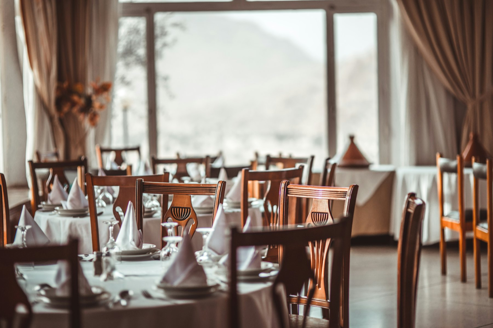
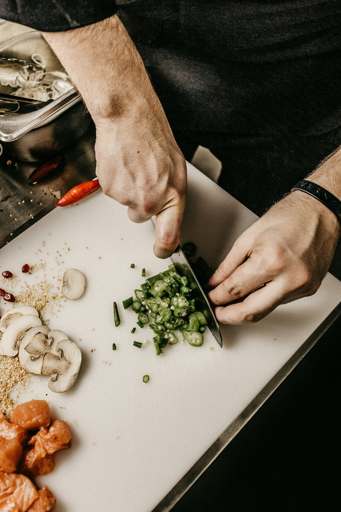

De nieuwsbrief, boordevol culinair nieuws
Wil je reserveren voor een van de bijzondere diners? Wacht dan niet te lang.
Lees de nieuwsbrief
Sinds 1977 een begrip in Zaltbommel en omgeving. Sinds 2003 met Luc van Iersel aan het fornuis.
'La Provence' is in 1977 gestart door Rien en Anne van Iersel. In oktober 2003 nam zoon Luc de zaak over en drukte er steeds meer een eigen stempel op.
Luc genoot zijn opleiding aan de gerenommeerde hotelschool Ter Duinen in Koksijde, België. Hij liep stages in vele vooraanstaande huizen, bij sterrenkoks uit binnen- en buitenland. Hij staat permanent zelf achter het fornuis en voert een ambachtelijke Franse keuken.
In het restaurant, en bij het ontbijt in de chambres, ontbreekt het je aan niets. Zo is er een mooie wijnkaart: het accent ligt op Frankrijk, maar ook Duitsland, Oostenrijk, Portugal, Spanje en Italië zijn goed vertegenwoordigd.
Naar de wijnkaart
Euro-Toques restaurantprijs
'La Provence' won de Keltum restaurantprijs 2018 van Euro-Toques Nederland, en is aangesloten bij deze vereniging van professionele koks en restaurateurs die staan voor gezonde voeding, ambachtelijk bereid met natuurzuivere producten.
Het pand is in 1860 gebouwd en heeft altijd een horecafunctie gehad: eerst als hotel, later als café-restaurant en nu alweer geruime tijd als restaurant.
Boven de voordeur en de ramen zitten nog de authentieke glas-in-loodramen. Tegenover 'La Provence' zat vroeger een stalhouderij. Daar wisselde men de paarden of liet ze rusten, terwijl de reizigers hier de maaltijd gebruikten of bleven overnachten.
In 2000 en 2001 onderging de monumentale villa een totale restauratie, waarbij alle authentieke details bewaard zijn gebleven. In de jaren daarna is het interieur stijlvol gemoderniseerd, zowel op de begane grond als op de eerste verdieping.
De villa wordt gebouwd, eerst als Hotel Bellevue.
Rien en Anne van Iersel beginnen hier 'La Provence'.
De totale restauratie (2000 en 2001) is voltooid.
Op 1 oktober neemt de jongere generatie het restaurant over.
In januari openen na een grondige verbouwing de Chambres de 'La Provence'.
Een nieuwe kaart, mooie samenwerkingen, een recensie in de krant: hier lees je het als eerste.
Wil je reserveren voor een van de bijzondere diners? Wacht dan niet te lang.
Lees de nieuwsbriefMet extra aandacht voor een mooie vacature: gastvrouw of gastheer.
Lees de nieuwsbrief · VacaturesOok dit jaar stelde Luc weer een kerstmenu samen: traditioneel Frans, met een regionale twist.
Kerstmenu 2026"Het is hier Frans wat de klok slaat (...)". Met die zin begint een fijne recensie in de Lekker500 2025. We worden er blij van!
'EET Met je hart' is een initiatief van Stichting Met je hart, die eenzaamheid onder ouderen wil doorbreken. Uit eten staat voor genieten, samen zijn en geluk delen, en dat gevoel kun je van 1 november tot half december delen met ouderen die zich eenzaam voelen: met een bijdrage van 1 euro per tafel. Alle bijdragen gaan voor 100% naar ontmoetingen voor eenzame ouderen in de Bommelerwaard.
Facebookpagina Bommelerwaard · Stichting Met je Hart"Luc van Iersel, chef-kok en eigenaar van restaurant 'La Provence' in Zaltbommel, staat al heel wat jaartjes borg voor een fijn verblijf en gedegen kookstijl. De joviale chef is wars van namaak en blijft de ambachtelijke Franse keuken trouw."
Lees verder in het BDEen paar keer per jaar sturen we een digitale nieuwsbrief vol wetenswaardigheden over 'La Provence' naar onze gasten en relaties.